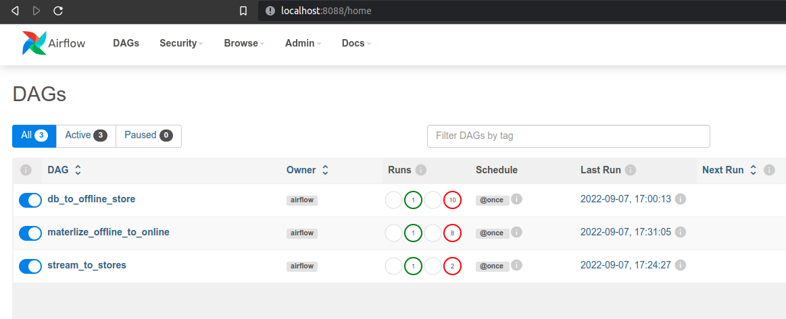

Xây dựng pipeline
Sau khi chạy feast apply để tạo ra feature definition ở đường dẫn registry/local_registry.db, chúng ta sẽ sử dụng folder này để config client store giao tiếp với feature store như sau:
| from feast import FeatureStore
store = FeatureStore(repo_path="../feature_repo") # (1)
|
- Khởi tạo client store để giao tiếp với feature store
Client này sẽ được sử dụng ở nhiều bước khác nhau bao gồm 1, 2, 3, 4, 5 như hình dưới đây:

Các tương tác chính với Feast
Chúng ta có 6 tương tác chính với Feast như sau:
1. Materialize feature từ offline sang online store để đảm bảo online store lưu trữ feature mới nhất
| data_pipeline/scripts/feast_helper.sh |
|---|
| cd feature_repo
feast materialize-incremental $(date +%Y-%m-%d)
|
2. Data scientist, training pipeline hoặc offline batch serving pipeline kéo features về để train model
| data_pipeline/examples/get_historical_features.py |
|---|
| entity_df = pd.DataFrame.from_dict(
{
"driver_id": [1001, 1002, 1003, 1004, 1001],
"datetime": [
datetime(2022, 4, 12, 10, 59, 42),
datetime(2022, 4, 12, 8, 12, 10),
datetime(2022, 4, 12, 16, 40, 26),
datetime(2022, 4, 12, 15, 1, 12),
datetime.now(),
],
}
)
training_df = store.get_historical_features(
entity_df=entity_df,
features=["driver_stats:acc_rate", "driver_stats:conv_rate"],
).to_df()
print(training_df.head())
|
3. Kéo features mới nhất tương ứng với các IDs trong request API để cho qua model dự đoán
| data_pipeline/examples/get_online_features.py |
|---|
| features = store.get_online_features(
features=[
"driver_stats:acc_rate",
"driver_stats:conv_rate"
],
entity_rows=[
{
"driver_id": 1001,
}
],
).to_dict(include_event_timestamps=True)
def print_online_features(features):
for key, value in sorted(features.items()):
print(key, " : ", value)
print_online_features(features)
|
4. Đẩy stream feature vào offline store
| data_pipeline/src/stream_to_stores/processor.py |
|---|
| def preprocess_fn(rows: pd.DataFrame):
print(f"df columns: {rows.columns}")
print(f"df size: {rows.size}")
print(f"df preview:\n{rows.head()}")
return rows
ingestion_config = SparkProcessorConfig(mode="spark", source="kafka", spark_session=spark, processing_time="30 seconds", query_timeout=15)
sfv = store.get_stream_feature_view("driver_stats_stream")
processor = get_stream_processor_object(
config=ingestion_config,
fs=store,
sfv=sfv,
preprocess_fn=preprocess_fn,
)
processor.ingest_stream_feature_view(PushMode.OFFLINE)
|
5. Đẩy stream feature vào online store
| processor.ingest_stream_feature_view()
|
7. ETL pipeline cập nhật dữ liệu của offline store
Lưu ý: Ở tương tác 2., thông thường các Data Scientist sẽ kéo dữ liệu từ feature store để:
- thực hiện POC
- thử nghiệm với các feature khác nhằm mục đích cải thiện model
Ở công đoạn xây dựng data pipeline, chúng ta sẽ xây dựng pipeline cho các tương tác 1., 4., 5., 7.
Xây dựng các pipelines
ETL pipeline
Để tạo ra một Airflow pipeline, thông thường chúng ta sẽ làm theo trình tự sau:
- Định nghĩa DAG cho pipeline (line 1-8)
- Viết các task cho pipeline, ví dụ: ingest_task, clean_task và explore_and_validate_task (line 9-25)
- Viết thứ tự chạy các task (line 27)
- Copy file code dag sang folder airflow/run_env/dags của repo clone từ MLOps Crash course platform
| data_pipeline/dags/db_to_offline_store.py |
|---|
| with DAG(
dag_id="db_to_offline_store", # (1)
default_args=DefaultConfig.DEFAULT_DAG_ARGS, # (2)
schedule_interval="@once", # (3)
start_date=pendulum.datetime(2022, 1, 1, tz="UTC"), # (4)
catchup=False, # (5)
tags=["data_pipeline"],
) as dag:
ingest_task = DockerOperator(
task_id="ingest_task",
**DefaultConfig.DEFAULT_DOCKER_OPERATOR_ARGS,
command="/bin/bash -c 'cd src/db_to_offline_store && python ingest.py'", # (6)
)
clean_task = DockerOperator(
task_id="clean_task",
**DefaultConfig.DEFAULT_DOCKER_OPERATOR_ARGS,
command="/bin/bash -c 'cd src/db_to_offline_store && python clean.py'",
)
explore_and_validate_task = DockerOperator(
task_id="explore_and_validate_task",
**DefaultConfig.DEFAULT_DOCKER_OPERATOR_ARGS,
command="/bin/bash -c 'cd src/db_to_offline_store && python explore_and_validate.py'",
)
ingest_task >> clean_task >> explore_and_validate_task # (7)
|
- Định nghĩa tên pipeline hiển thị ở trên Airflow dashboard
- Định nghĩa image cho các DockerOperator, số lần retry pipeline, và khoảng thời gian giữa các lần retry
- Lịch chạy pipeline, ở đây @once là một lần chạy, mọi người có thể thay bằng cron expression ví dụ như 0 0 1 * *
- Ngày bắt đầu chạy pipeline theo múi giờ UTC
- Nếu start_date là ngày 01/01/2022, ngày deploy/turn on pipeline là ngày 02/02/2022, và schedule_interval là @daily thì sẽ không chạy các ngày trước 02/02/2022 nữa
- Command chạy trong docker container cho bước này
- Định nghĩa thứ tự chạy các bước của pipeline: đầu tiên là ingest sau đó tới clean và cuối cùng là explore_and_validate
Lưu ý: Do chúng ta dùng DockerOperator để tạo task nên cần phải build image chứa code và môi trường trước, sau đó sẽ truyền tên image vào defaultargs trong DAG (line 3). Dockerfile để build image mọi người có thể tham khảo tại _data-pipeline/deployment/Dockerfile
Sau khi hoàn tất các bước ở trên, mọi người truy cập Airflow sẽ thấy một DAG với tên chính là dagid _db_to_offline_store, 2 DAG bên dưới chính là những pipeline còn lại của data pipeline đề cập ở bên dưới.

Chúng ta cũng có thể xem thứ tự các task của pipeline này như sau:

Tương tự như ETL pipeline, chúng ta sẽ code tiếp Feast materialize pipeline và Stream to stores pipline như bên dưới.
Feast materialize pipeline
| data_pipeline/dags/materialize_offline_to_online.py |
|---|
| with DAG(
dag_id="materlize_offline_to_online",
default_args=DefaultConfig.DEFAULT_DAG_ARGS,
schedule_interval="@once",
start_date=pendulum.datetime(2022, 1, 1, tz="UTC"),
catchup=False,
tags=["data_pipeline"],
) as dag:
materialize_task = DockerOperator(
task_id="materialize_task",
**DefaultConfig.DEFAULT_DOCKER_OPERATOR_ARGS,
command="/bin/bash -c 'chmod +x ./scripts/feast_helper.sh' && ./scripts/feast_helper.sh",
)
|
Stream to stores pipline
| data_pipeline/dags/stream_to_stores.py |
|---|
| with DAG(
dag_id="stream_to_stores",
default_args=DefaultConfig.DEFAULT_DAG_ARGS,
schedule_interval="@once",
start_date=pendulum.datetime(2022, 1, 1, tz="UTC"),
catchup=False,
tags=["data_pipeline"],
) as dag:
stream_to_online_task = DockerOperator(
task_id="stream_to_online_task",
command="/bin/bash -c 'cd src/stream_to_stores && python ingest.py --store online'",
**DefaultConfig.DEFAULT_DOCKER_OPERATOR_ARGS,
)
stream_to_offline_task = DockerOperator(
task_id="stream_to_offline_task",
**DefaultConfig.DEFAULT_DOCKER_OPERATOR_ARGS,
command="/bin/bash -c 'cd src/stream_to_stores && python ingest.py --store offline'",
)
|
{kind=link}